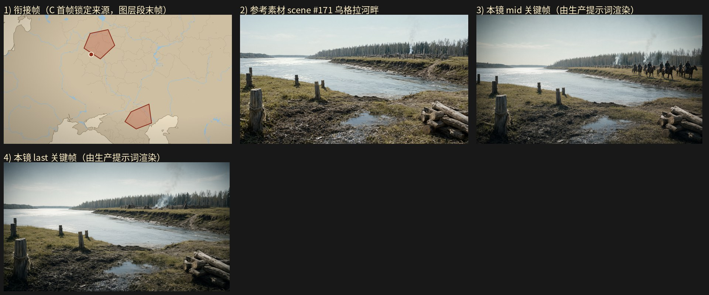

旁白：此时距离朱元璋推翻蒙元，建立明朝，已过去一百多年。蒙古人对俄国人的统治长达两百多年。
设计卡预算：layer 5.5 s + gen 5.5 s；mid_frame_time（OLD）5.5 s
NEW 原地重写：关键帧任务墙钟 20.0s / 3 次调用 / 峰值提示词 55129 tokens / 完成 1085 tokens；视频任务墙钟 40.0s / 3 次调用 / 峰值提示词 55927 tokens / 完成 1845 tokens；保存 成功
NEW-scratch：关键帧任务墙钟 30.0s / 3 次调用 / 峰值提示词 53331 tokens / 完成 1049 tokens；视频任务墙钟 30.0s / 3 次调用 / 峰值提示词 55035 tokens / 完成 1426 tokens；保存 成功

（空）
@乌格拉河畔，正午顶光，河面亮白反光强烈，两岸草岸呈明黄绿，天空淡青带薄云，色调清冷明亮，16:9 横构图电影感剧照。远景广角平视固定机位，取 @乌格拉河畔 的宽阔河湾：画面中部是宽而流速平缓的河面，左右两岸为低缓草岸，岸后一线白桦与云杉树林；对岸滩地上散着木桩与成捆原木，木栅营寨沿河岸排开，寨内几处营火升起细烟，烟柱被顶光压成淡白的细线。一队蒙古骑兵（尖顶毡帽、深色长袍、背弓，约十余骑）沿对岸草坡向画面右侧远处缓缓撤离，骑者各自端坐马背、双手握着缰绳搁在鞍前，双腿垂在马腹两侧、双脚踩在马镫上，马匹四腿缓步前行、马头朝向画面右方；队伍成一列纵队，队尾几骑在草地起伏处半隐。近岸前景一段滩地上斜放着几根木桩与成捆原木，河面无桥、无船。顶光把河面照成亮白，草岸与对岸林线层次分明，画面开阔平稳，人物与马匹完整入画。16:9 横构图电影感剧照，单帧静态画面
@乌格拉河畔，正午顶光，河面亮白反光强烈，草岸明黄绿，天空淡青带薄云，色调清冷明亮，16:9 横构图电影感剧照。广角平视固定机位，取 @乌格拉河畔 宽阔河湾的对岸全景：画面中部河面空旷平静，无船无桥，水面只有细碎的顶光反光；近岸前景一段滩地上斜插着木桩与成捆原木，前景木料占据画面右下角。对岸滩地上只剩一座空营：木栅营寨的栅栏有几段倒伏、木杆斜倚在草地上，营寨内散落柴堆与弃置的木架，几缕细烟从熄灭的营火堆上淡淡升起并逐渐散去；草坡上无一骑一人，草面留有一道被踏过的痕迹向画面右侧远处延伸，远处草岸与白桦云杉林线在顶光下淡成层次。河面空旷延展至地平线，两岸低缓，画面开阔平稳、层次清晰，整幅画面中没有任何人物与马匹。16:9 横构图电影感剧照，单帧静态画面
场景：@乌格拉河畔。 0-1秒：俯拍地图式全景，米黄底色上分布浅蓝河流与细线边界，左下与下方为浅色海岸轮廓，画面中上部有一块红褐色多边形区域、其左下角外侧有一个白色小圆点，中下部偏右另有一块红褐色多边形区域，整体光线均匀、色调偏暖，留白主要在上方与右侧，镜头极缓推近，画面无人。 1-4秒：切到 @乌格拉河畔 的宽阔河湾远景平视固定机位，画面中部是宽而流速平缓的河面，左右两岸为低缓草岸，岸后一线白桦与云杉树林；对岸滩地上散着木桩与成捆原木，木栅营寨沿河岸排开，寨内几处营火升起细烟；一队蒙古骑兵（尖顶毡帽、深色长袍、背弓，共十余骑）沿对岸草坡向画面右侧远处缓缓撤离，骑者各自端坐马背、双手握着缰绳搁在鞍前，双腿垂在马腹两侧、双脚踩在马镫上，马匹四腿缓步前行、马头朝向画面右方，队伍成一列纵队、队尾几骑在草地起伏处半隐；近岸前景一段滩地上斜放着几根木桩与成捆原木，河面无桥、无船，正午顶光把河面照成亮白。 4-8秒：@乌格拉河畔，切到近岸前景的反向中景平视固定机位，河面占据画面中部，对岸草坡与木栅营寨退到画面上方，前景的木桩与成捆原木压在画面右下角；一队蒙古骑兵（尖顶毡帽、深色长袍、背弓，共十余骑）在对岸草坡上继续向画面右侧移动，骑者端坐马背、双手握着缰绳、双腿垂在马腹两侧，马匹四腿迈步、马头朝向画面右方，队伍逐渐缩成细长一列；随后为首几骑依次越过草坡的隆起处、马身与骑者的背影一道隐入坡后，其余各骑跟随不见，河面重新变得空旷平静，只剩细碎顶光反光。 8-11秒：@乌格拉河畔，切回对岸空营的广角平视固定机位，构图回到宽阔河湾全景：画面中部河面空旷平静、无船无桥，近岸前景的木桩与成捆原木占据画面右下角，对岸滩地上只剩一座空营，木栅营寨的栅栏有几段倒伏、木杆斜倚在草地上，营寨内散落柴堆与弃置的木架，几缕细烟从熄灭的营火堆上淡淡升起并逐渐散去，草坡上无一骑一人，草面留有一道被踏过的痕迹向画面右侧远处延伸，远处草岸与白桦云杉林线在顶光下淡成层次，河面空旷延展至地平线，两岸低缓，画面开阔平稳、层次清晰，整幅画面中没有任何人物与马匹。
5.5 秒
（空）
@乌格拉河畔，正午顶光，河面亮白反光强烈，两岸草岸呈明黄绿，天空淡青带薄云，色调清冷明亮，16:9 横构图电影感剧照。远景广角平视固定机位，取 @乌格拉河畔 的宽阔河湾：画面中部是宽而流速平缓的河面，左右两岸为低缓草岸，岸后一线白桦与云杉树林；对岸滩地上散着木桩与成捆原木，木栅营寨沿河岸排开，寨内几处营火升起细烟，烟柱被顶光压成淡白的细线。一队蒙古骑兵（尖顶毡帽、深色长袍、背弓，约十余骑）沿对岸草坡向画面右侧远处缓缓撤离，骑者各自端坐马背、双手握着缰绳搁在鞍前，双腿垂在马腹两侧、双脚踩在马镫上，马匹四腿缓步前行、马头朝向画面右方；队伍成一列纵队，队尾几骑在草地起伏处半隐。近岸前景一段滩地上斜放着几根木桩与成捆原木，河面无桥、无船。顶光把河面照成亮白，草岸与对岸林线层次分明，画面开阔平稳，人物与马匹完整入画。16:9 横构图电影感剧照，单帧静态画面
@乌格拉河畔，正午顶光，河面亮白反光强烈，草岸明黄绿，天空淡青带薄云，色调清冷明亮，16:9 横构图电影感剧照。广角平视固定机位，取 @乌格拉河畔 宽阔河湾的对岸全景：画面中部河面空旷平静，无船无桥，水面只有细碎的顶光反光；近岸前景一段滩地上斜插着木桩与成捆原木，前景木料占据画面右下角。对岸滩地上只剩一座空营：木栅营寨的栅栏有几段倒伏、木杆斜倚在草地上，营寨内散落柴堆与弃置的木架，几缕细烟从熄灭的营火堆上淡淡升起并逐渐散去；草坡上无一骑一人，草面留有一道被踏过的痕迹向画面右侧远处延伸，远处草岸与白桦云杉林线在顶光下淡成层次。河面空旷延展至地平线，两岸低缓，画面开阔平稳、层次清晰，整幅画面中没有任何人物与马匹。16:9 横构图电影感剧照，单帧静态画面
场景：@乌格拉河畔。 0-1秒：俯拍地图式全景，米黄底色上分布浅蓝河流与细线边界，左下与下方为浅色海岸轮廓，画面中上部有一块红褐色多边形区域、其左下角外侧有一个白色小圆点，中下部偏右另有一块红褐色多边形区域，整体光线均匀、色调偏暖，留白主要在上方与右侧，镜头静止极缓推近，画面无人。 1-5.5秒：切到 @乌格拉河畔 的宽阔河湾远景广角平视固定机位，画面中部是宽而流速平缓的河面，左右两岸为低缓草岸，岸后一线白桦与云杉树林；一队蒙古骑兵（尖顶毡帽、深色长袍、背弓，共十余骑）从对岸木栅营寨处依次上马，沿草坡向画面右侧远处缓缓撤离，骑者各自端坐马背、双手握着缰绳搁在鞍前，双腿垂在马腹两侧、双脚踩在马镫上，马匹四腿缓步前行、马头朝向画面右方；对岸滩地上散着木桩与成捆原木，木栅营寨内几处营火升起细烟，近岸前景斜放着几根木桩与成捆原木，河面无桥无船，正午顶光把河面照成亮白。 5.5-8.5秒：仍取 @乌格拉河畔 的河湾远景广角平视固定机位，一队蒙古骑兵（尖顶毡帽、深色长袍、背弓，共十余骑）沿对岸草坡继续向画面右侧远处撤离，队伍成一列纵队、骑者端坐马背、双手握缰绳、双腿垂在马腹两侧，队尾几骑在草地起伏处半隐，营寨细烟被顶光压成淡白的细线，河面只有细碎顶光反光；随后为首几骑越过草坡隆起处隐入坡后，其余各骑跟随不见，草坡重新空旷，只剩营寨的几缕细烟与被踏过的草痕。 8.5-11秒：@乌格拉河畔，切到对岸空营的广角平视固定机位，取宽阔河湾全景：画面中部河面空旷平静、无船无桥，水面只有细碎顶光反光，近岸前景一段滩地上斜插着木桩与成捆原木、占据画面右下角；对岸滩地上只剩一座空营，木栅营寨的栅栏有几段倒伏、木杆斜倚在草地上，营寨内散落柴堆与弃置的木架，几缕细烟从熄灭的营火堆上淡淡升起并逐渐散去，草坡上无一骑一人，草面留有一道被踏过的痕迹向画面右侧远处延伸，远处草岸与白桦云杉林线在顶光下淡成层次，河面空旷延展至地平线，两岸低缓，画面开阔平稳、层次清晰，整幅画面中没有任何人物与马匹。
5.5 秒
（空）
@乌格拉河畔，正午顶光，河面亮白反光强烈，草岸呈明黄绿，天空淡青带薄云，色调清冷明亮，16:9 横构图电影感剧照。远景广角平视固定机位，镜头取 @乌格拉河畔 的宽阔河湾：画面上部为淡青天空与一线河岸树林，中部为宽阔平缓的河面，下部为近岸草坡与滩地上零散的木桩与成捆原木，对岸远处可见木栅营寨。一队蒙古骑兵（尖顶毡帽、深色长袍、背弓，共十余骑）沿对岸草坡向画面右侧远处缓缓撤离，骑手们双腿夹住马腹、右手执缰、左手垂在身侧，马匹四蹄缓步、马头朝向画面右方，队伍成松散纵队、背影朝向镜头方向远去，马蹄踏起的薄尘贴着草面。河面平静无船无桥，正午强光把队伍在草坡上投下短小的深色阴影。构图三层分明、队伍完整入画。16:9 横构图电影感剧照，单帧静态画面
@乌格拉河畔，正午顶光，河面亮白反光强烈，草岸呈明黄绿，天空淡青带薄云，色调清冷明亮，16:9 横构图电影感剧照。中近景平视固定机位，镜头取 @乌格拉河畔 的近岸滩地：前景是河岸滩地上零散的木桩与成捆原木，中景为河湾水面与低缓草岸，远景对岸的木栅营寨已空，营内余烟渐淡成稀薄烟柱，营寨木栅倒伏数处，画面空旷。蒙古骑兵已完全撤离，画面中没有任何骑兵与人影，只有空营、木桩与平静的河面，表达两百多年统治的终点。对岸远处的树林呈深绿细带，构图平稳、层次清晰。画面稳定清晰、空景完整入画，可被下一镜直接承接。16:9 横构图电影感剧照，单帧静态画面
场景：@乌格拉河畔。 0-1秒：俯拍地图式全景，米黄底色上分布浅蓝河流与细线边界，左下与下方为浅色海岸轮廓，画面中上部一块红褐色多边形区域、其左下角外侧有一个白色小圆点，中下部偏右另有一块红褐色多边形区域，整体光线均匀、色调偏暖，留白主要在上方与右侧，镜头静止或极缓推，画面无人。 1-4秒：切到 @乌格拉河畔 的远景广角平视固定机位，画面上部为淡青天空与一线河岸树林，中部为宽阔平缓的河面，下部为近岸草坡与滩地上零散的木桩与成捆原木，对岸远处可见木栅营寨；一队蒙古骑兵（尖顶毡帽、深色长袍、背弓，共十余骑）成松散纵队沿对岸草坡向画面右侧远处缓缓撤离，骑手们双腿夹住马腹、右手执缰、左手垂在身侧，马匹四蹄缓步、马头朝向画面右方，正午顶光把队伍在草坡上投下短小的深色阴影，河面平静无船无桥。 4-5.5秒：仍取 @乌格拉河畔 的远景广角固定机位，镜头缓推，蒙古骑兵队伍（尖顶毡帽、深色长袍、背弓）继续向画面右侧远处行进，骑手双腿夹马腹、右手执缰、左手垂在身侧，马蹄踏起的薄尘贴着草面，对岸木栅营寨中升起一缕细烟，队伍逐渐远离营寨方向。 5.5-8.5秒：切到 @乌格拉河畔 的宽阔河湾远景广角平视固定机位，正午顶光、河面亮白反光强烈、草岸明黄绿、天空淡青带薄云；蒙古骑兵队伍（尖顶毡帽、深色长袍、背弓，共十余骑）沿对岸草坡向画面右侧更远处缓缓撤离，骑手们双腿夹住马腹、右手执缰、左手垂在身侧，马匹四蹄缓步、马头朝画面右方，队伍背影朝镜头方向远去、身形逐渐缩小，营寨的细烟在营上空渐淡成稀薄烟柱，河面平静。 8.5-11秒：切到 @乌格拉河畔 的中近景平视固定机位，正午顶光，河面亮白反光强烈，前景为河岸滩地上零散的木桩与成捆原木，中景为河湾水面与低缓草岸，远景对岸的木栅营寨已空、营内余烟渐淡成稀薄烟柱、营寨木栅倒伏数处，蒙古骑兵已完全撤离，画面中没有任何骑兵与人影，只有空营、木桩与平静的河面，对岸远处树林呈深绿细带，画面空旷，构图平稳，收束为稳定的空景。
5.5 秒